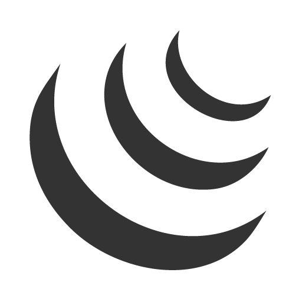
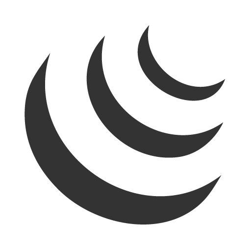

CARLOS EDUARDO (Ceará-Mirim/Rn)
email: kaduifrn@gmail.com
Olá , eu sou Carlos Eduardo da Silva Reginaldo (também chamado de kadu) sou técnico em informática pelo IFRN, lugar aonde conheci a programação e acabei criando grande admiração e querendo seguir nessa área. Atualmente estudo Redes de computadores pelo IMD.

Formação
-
IFRN(Instituto de Educação Ciência e Técnologia do Rio Grande do Norte)
Técnico em Informática(2014-2018)
-
IMD(Instituto Métropole Digital)
Técnico em Redes de Computadores(2018-)
Capacitações


 



- Criação e administração de banco de dados em SQL
- Conhecimento básico nas linguagens C/C++
- Criação de aplicações Desktop com a linguagem orientada a objetos Java
- Criação de sistemas Web com Laravel
- Criação de sites com HTML5 ,CSS3 e JavaScript ( incluindo JQuery)
- Conhecimento de Servidores Linux (SAMBA, Apache e DHCP) e Active Directory
Projetos


Dentre alguns dos projetos que já participei durante a minha vida acadêmica o que mais se destaca foi a construção de uma mini estação anemométrica utilizando o minicomputador Raspberry Pi ,no qual atuei como bolsista ,auxiliando no seu desenvolvimento durante o tempo que estudei no IFRN.